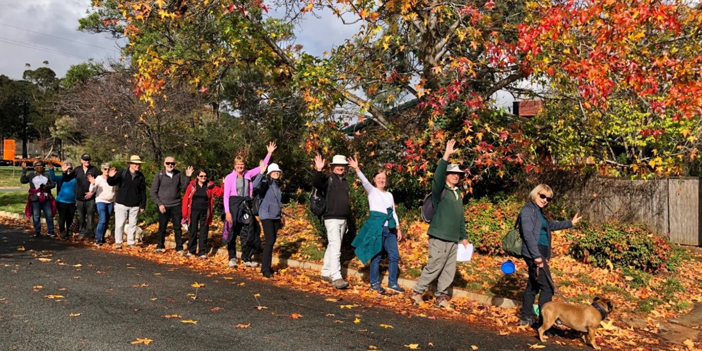

Tour
Tour
NOV 2 · 18:30 · Acton
The Shine Dome Nocturne
A rare evening tour inside Australia's Academy of Science, with curatorial talks by the conservation team.
Season 2026 · Canberra
Walks, talks, interiors, and sketch days built around Canberra's mid-century architectural heritage.
Current Season
Tour
NOV 2 · 18:30 · Acton
A rare evening tour inside Australia's Academy of Science, with curatorial talks by the conservation team.
 Talk
Talk
NOV 15 · 10:00 · Manuka
A panel of architects, residents, and historians on the 1960s suburbs and what is at risk.
 Workshop
Workshop
NOV 22 · 13:00 · Lake Burley Griffin
Bring a pencil and a folding stool. Three hours of guided sketching across the lakeside campus.
 Film
Film
DEC 5 · 19:30 · Civic
A public premiere of the new short-film series, followed by a Q&A with the director.

TourDEC 12 · 09:30 · Civic
A two-hour guided walk through Civic's commercial modernism, from Sydney Building to Garema Place.
JUL 4 · 10:00 · Canberra
A daylong symposium archiving the lesser-known architects who shaped 1960s Canberra.
No events match this filter.
Past events, symposiums, photography, and recordings from our previous seasons.
Membership
Join our community of conservationists and enthusiasts. Members receive priority booking and access to the Closed Doors programme.
Join Now